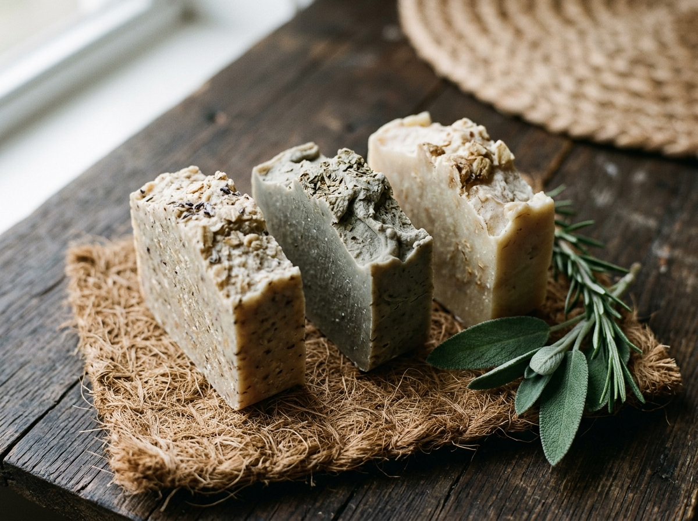

Artisan Craft & Science
Oct 22, 2026

Why do we make banana soaps from leaf not the fruit?
Yes, our banana soaps are made from freshly harvested banana leaves from our farm. With natural antimicrobial detox properties, green-tea-level anti-inflammatory compounds, and natural UV shielding, they heal from the root.
#PurreinsFrequency
#BananaLeafSoap
#NaturalUVShield
#AntimicrobialDetox
#NothingInNatureIsAllergic
#RootHealing